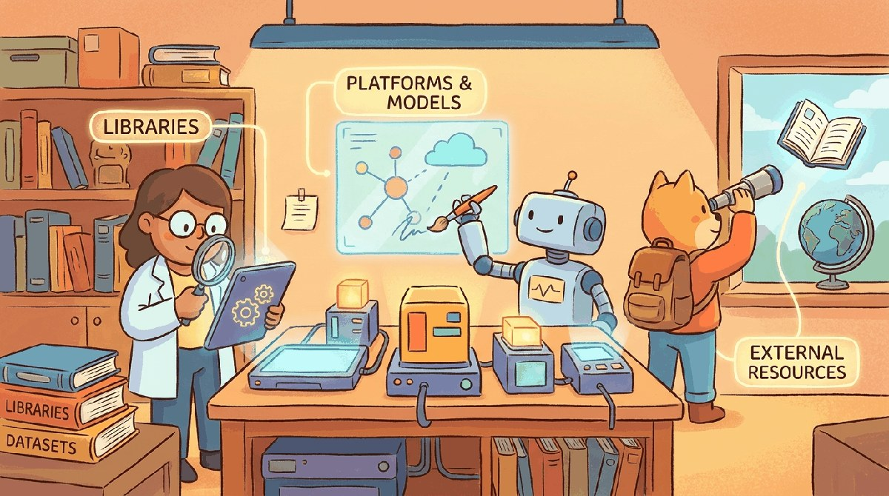

"In production, the eval set is the spec."
Eval, Spec-First AI Agent
Chapters 42 through 44 framed evaluation; this chapter is the toolbox: OpenAI Evals, Inspect, Ragas, DeepEval, Promptfoo, LangSmith, Phoenix, and the small per-team choices about where evaluation should live in your CI.
Part IX split into two halves: evaluation (how do we know it works?) and production (how do we keep it working?). The eval toolbox is OpenAI Evals, HELM, lm-evaluation-harness, Inspect AI. The production toolbox is the serving stack (vLLM, TGI, SGLang, Triton) plus the observability layer (Arize, LangSmith, Helicone, Phoenix).
Chapter Overview
Part IX covered offline eval, online eval, observability, drift, and LLM-as-judge methods. This chapter consolidates the eval and production toolchain: the platforms (eval-as-product services, observability suites, model registries), the libraries that wrap the standard metrics, the canonical datasets organized by knowledge / capability / safety, the judge and serving models that anchor the rest of Part IX, and the academic and industrial venues that keep eval current.
Eval tooling crossed from "build it yourself" to "buy a vertical product" in 2024 and 2025. This chapter is the index of what to use when.
- Compare eval-as-product platforms (Braintrust, Latitude, Laminar) with observability suites (Langfuse, Arize, Datadog).
- Wire eval libraries and judge models into a CI pipeline that gates deploys.
- Pick the right benchmark family (knowledge, capability, safety) for a release-gate decision.
- Choose a judge model based on agreement-with-humans, cost, and bias profile.
- Track the academic and industrial venues (NeurIPS Datasets and Benchmarks, MLSys, blog posts) that drive eval evolution.
For evaluation:
pip install lm-eval inspect-ailm-evaluation-harness covers most standard benchmarks; Inspect AI from the UK AISI covers agent and safety evals. For production serving: vLLM is the default. vLLM & Inference Servers covers the serving side in detail.
Sections in This Chapter
Prerequisites
- Evaluation foundations from Chapter 42
- Production observability from Chapter 44
- Comfort with CI/CD basics (GitHub Actions or similar)
- 45.1 Platforms Production LLM systems require more than a trained model and a serving endpoint.
- 45.2 Libraries & Frameworks Production agent deployment has three legs.
- 45.3 Datasets & Benchmarks Eval datasets fall into three buckets: knowledge benchmarks, capability benchmarks, and safety / alignment benchmarks.
- 45.4 Models Two model categories matter for Part IX: judge models (used for LLM-as-judge eval) and the production-serving models themselves.
- 45.5 External Reading & Communities Part IX's literature is split between the academic eval community and the industrial MLOps community.
What Comes Next
Next: Chapter 46: LLM-as-Judge & Automated Evaluation. Chapter 46 closes Part IX with the technique that quietly powers most modern eval pipelines: using an LLM (often a stronger one) to grade the outputs of another. We cover judge reliability, position bias and length bias, debiasing techniques, training judge models, multi-judge ensembles, and the patterns that ship in production without inheriting the judge's own blindspots.